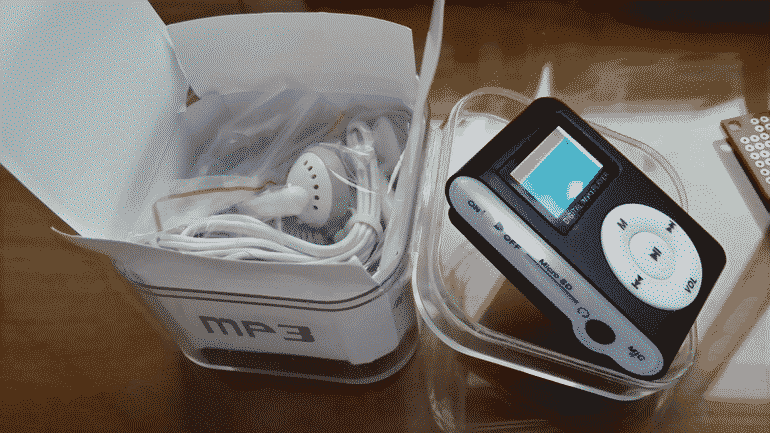
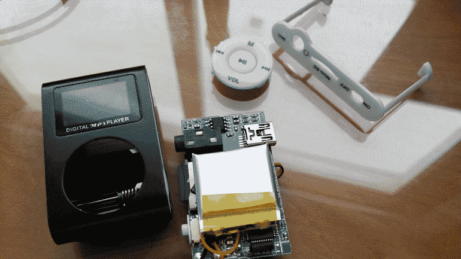
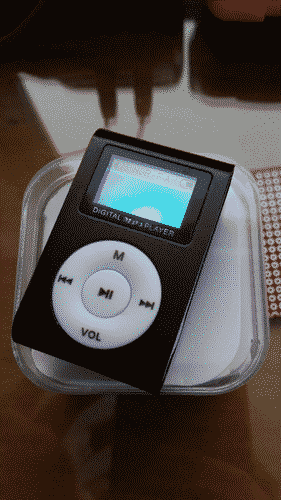
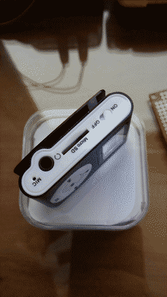
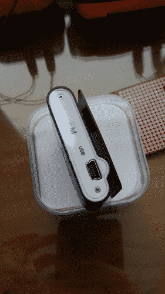
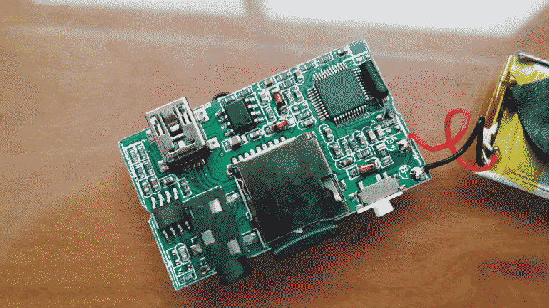
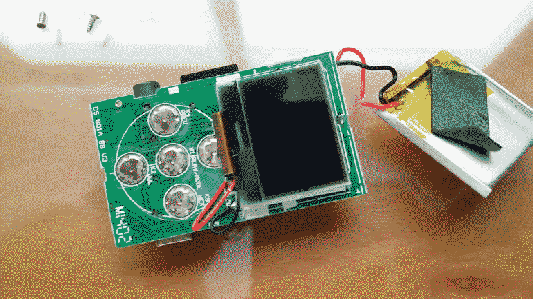

Generic Chinese MP3 Player Teardown
As I've described in Unbelievable Prices, I bought a crappy chinese MP3 player to use as a "true" sound source (instead of the function generator I use while early-testing my audio projects) for testing my audio circuits without having to worry about accidentally shorting 12V into my iPod's headphone jack or something like that while probing around.
Yesterday it arrived and as it was expected, it's the best of Shenzhen. Horrible plastics and build quality, the buttons are super stiff, and overall a shitty product as it was expected to be, but since I'm only going to use it for testing, I don't care. Here are some pictures of the "beautiful" thing:
|
 Unboxing this cheap little thing
|
 Taking it to bits
|
 Front side
|
|
 Left side
|
 Right side
|


As you can see it's a typical chinese product. The LiPo battery has no markings, except for a weird XI logo, it doesn't look like a protected pack and the flimsy wires that connect it to the main board can snap off at any second and short the thing out.


Right next to what looks like the main processor, which sadly I couldn't find any information about it, there's a very nicely heat-shrunk clock crystal. On the center of the board you can see a generic 4871 audio power amplifier, and on the left side there's a BK1080 FM receiver IC.


On the other side of the board all you can see is the horrible LCD and the shittiest buttons you can buy in the Shenzhen market.
This article was imported from my old blog . Some things may be broken.